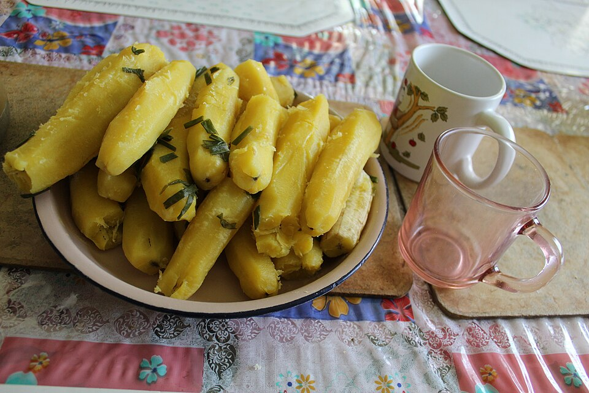
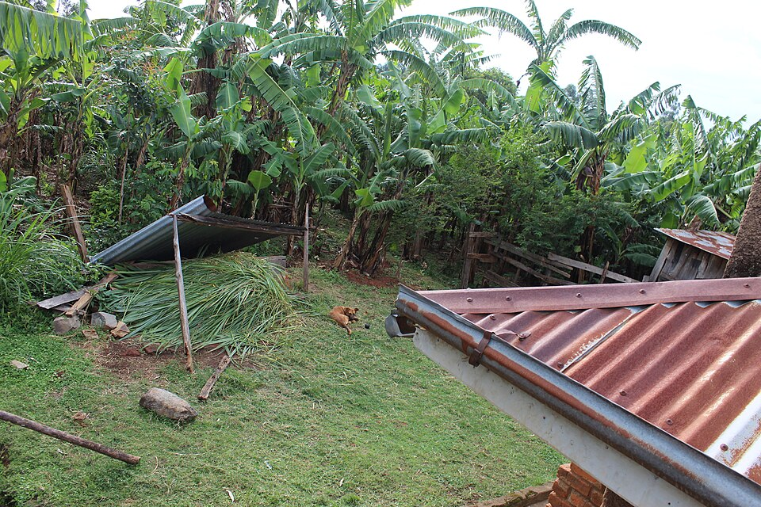

Western Kenya · 05
The Luhya
A western Kenyan story of homesteads, foodways, music and community.
A living profile
Home as a gathering place
Explore Luhya life through architecture, food, ceremony and the strength of extended family.
HeartlandWestern KenyaSettlements around the Lake Victoria basin
LanguagesLuhya languagesA family of related Bantu varieties
LivelihoodsFarmingMaize, bananas, livestock and trade
CommunityMany voicesSeveral culturally distinct Luhya groups



Across many Luhya communities, music, food and gathering create a living bridge between home, history and future. Luhya identity includes several related groups with their own local histories and languages.
What to explore
Notice the variety within the wider Luhya cultural family.
- Homesteads, family life and community gathering
- Foodways, farming and hospitality
- Music, dance and local language traditions